The net result of the radiation interaction in a wide category of detectors is the appearance of a given amount of electric charge within the detector active volume. Our simplified detector model thus assumes that a charge \(Q\) appears within the detector at time \(t = 0\) resulting from the interaction of a single particle or quantum of radiation. Next, this charge must be collected to form the basic electrical signal. Typically, collection of the charge is accomplished through the imposition of an electric field within the detector, which causes the positive and negative charges created by the radiation to flow in opposite directions. The time required to fully collect the charge varies greatly from one detector to another. For example, in ion chambers the collection time can be as long as a few milliseconds, whereas in semiconductor diode detectors the time is a few nanoseconds. These times reflect both the mobility of the charge carriers within the detector active volume and the average distance that must be traveled before arrival at the collection electrodes.
We therefore begin with a model of a prototypical detector whose response to a single particle or quantum of radiation will be a current that flows for a time equal to the charge collection time. The sketch below illustrates one example for the time dependence the detector current might assume, where \(t_c\) represents the charge collection time.
|
\[\int_0^{t_c}i(t)dt = Q\] |
In any real situation, many quanta of radiation will interact over a period of time. If the irradiation rate is high, situations can arise in which current is flowing in the detector from more than one interaction at a given time. For purposes of the present discussion, we assume that the rate is low enough so that each individual interaction gives rise to a current that is distinguishable from all others. The magnitude and duration of each current pulse may vary depending on the type of interaction, and a sketch of the instantaneous current flowing in the detector might then appear as shown in the sketch below.

In pulse mode operation, the measurement instrumentation is designed to record each individual quantum of radiation that interacts in the detector. In most common applications, the time integral of each burst of current, or the total charge \(Q\), is recorded since the energy deposited in the detector is directly related to \(Q\). All detectors used to measure the energy of individual radiation quanta must be operated in pulse mode. Such applications are categorized as radiation spectroscopy and are the subject of much of the remainder of this text.
In other circumstances, a simpler approach may suit the needs of the measurement: All pulses above a low-level threshold are registered from the detector, regardless of the value of \(Q\). This approach is often called pulse counting, and we will show various examples later in this text. It can be useful in many applications in which only the intensity of the radiation is of interest, rather than sensing any changes in or information about the incident energy distribution of the radiation.
At very high event rates, pulse mode operation becomes impractical or even impossible. The time between adjacent events may become too short to carry out an adequate analysis, or the current pulses from successive events may overlap in time. In such cases, one can revert to alternative measurement techniques that respond to the time average taken over many individual events. This approach leads to the remaining two modes of operation: current mode and MSV mode.

If we assume that the measuring device has a fixed response time \(T\), then the recorded signal from a sequence of events will be a time-dependent current given by \[ I(t) = \frac{1}{T}\int_{t - T}^t i(t')dt' \tag{4.1} \] Because the response time \(T\) is typically long compared with the average time between individual current pulses from the detector, the effect is to average out many of the fluctuations in the intervals between individual radiation interactions and to record an average current that depends on the product of the interaction rate and the charge per interaction. In current mode, this time average of the individual current bursts serves as the basic signal that is recorded.
At any instant of time, however, there is a statistical uncertainty in this signal due to the random fluctuations in the arrival time of the event. In many ways, the integration time \(T\) is analogous to the measurement time discussed in the statistical analysis of the previous chapter. Thus, the choice of large \(T\) will minimize statistical fluctuations in the signal but will also slow the response to rapid changes in the rate or nature of the radiation interactions.
The average current is given by the product of the average event rate and the charge produced per event. \[ I_0 = rQ = r\frac{E}{W}q \tag{4.2} \] where \begin{eqnarray} r &=& {\rm event \, rate}\\ Q &=& Eq/W = {\rm charge \, produced \, for \, each \, event}\\ E &=& {\rm average \, energy \, deposited \, per \, event}\\ W &=& {\rm average \, energy \, required \, to \, produce \, a \, unit \, charge \, pair (e.g., electron\text{-}ion \, pair)}\\ q &=& 1.6 \times 10^{-19}C \end{eqnarray}
For steady-state irradiation of the detector, this average current can also be rewritten as the sum of a constant current \(I\). plus a time-dependent fluctuating component \(\sigma_i(t)\), as sketched below.

A statistical measure of this random component is the variance or mean square value, defined as the time average of the square of the difference between the fluctuating current \(I(t)\) and the average current \(I_0\). This mean square value is given by \[ \overline{\sigma_I^2(t)} = \frac{1}{T}\int_{t - T}^t[I(t') - I_0]^2 dt' = \frac{1}{T}\sigma_i^2(t')dt' \tag{4.3} \] and the standard deviation follows as \[ \overline{\sigma_I(t)} = \sqrt{\overline{\sigma_I^2(t)}} \tag{4.4} \]
Recall from Poisson statistics that the standard deviation in the number of recorded events \(n\) over a given observation period is expected to be \[ \sigma_n = \sqrt{n} \tag{4.5} \] Therefore, the standard deviation in the number of events occurring at a rate \(r\) in an effective measurement time \(T\) is simply \[ \sigma_n = \sqrt{rT} \tag{4.6} \] If each pulse contributes the same charge, the fractional standard deviation in the measured signal due to random fluctuations in pulse arrival time is given by \[ \frac{\overline{\sigma_i(t)}}{I_0} = \frac{\sigma_n}{n} = \frac{1}{\sqrt{rT}} \tag{4.7} \]
It should be noted that, in the derivation of Eq. (4.7), the charge produced in each event (\(Q\)) is assumed to be constant. Therefore, the result accounts for only the random fluctuations in pulse arrival time, but not for fluctuations in pulse amplitude. In some applications, however, this second source of variance in the signal is small in comparison with the first, and the general character of the results given remains applicable.

The MSV mode of operation is most useful when making measurements in mixed radiation environments when the charge produced by one type of radiation is much different than that from the second type. If simple current mode operation is chosen, the measured current will linearly reflect the charges contributed by each type. In MSV mode, however, the derived signal is proportional to the square of the charge per event. This operational mode will therefore further weight the detector response in favor of the type of radiation giving the larger average charge per event. As one example of the useful application of the MSV mode, in Chapter 14 we describe its use with neutron detectors in reactor instrumentation to enhance the neutron signal compared with the response due to smaller-amplitude gamma-ray events.
The nature of the signal pulse produced from a single event depends on the input characteristics of the circuit to which the detector is connected (usually a preamplifier). The equivalent circuit can often be represented as shown below.
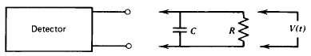
Here \(R\) represents the input resistance of the circuit, and \(C\) represents the equivalent capacitance of both the detector itself and the measuring circuit. If, for example, a preamplifier is attached to the detector, then \(R\) is its input resistance and \(C\) is the summed capacitance of the detector, the cable used to connect the detector to the preamplifier, and the input capacitance of the preamplifier itself. In most cases, the time-dependent voltage \(V(t)\) across the load resistance is the fundamental signal voltage on which pulse mode operation is based. Two separate extremes of operation can be identified that depend on the relative value of the time constant of the measuring circuit. From simple circuit analysis, this time constant is given by the product of \(R\) and \(C\), or \(\tau) = RC\).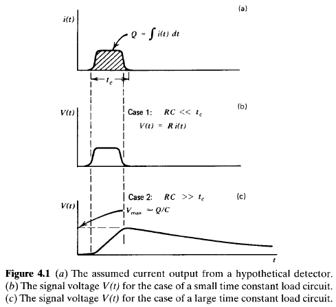
Because the latter case is by far the most common means of pulse-type operation of detectors, it is important to draw some general conclusions. First, the time required for the signal pulse to reach its maximum value is determined by the charge collection time within the detector itself. No properties of the external or load circuit influence the rise time of the pulses. On the other hand, the decay time of the pulses, or the time required to restore the signal voltage to zero, is determined only by the time constant of the load circuit. The conclusion that the leading edge is detector dependent and the trailing edge circuit dependent is a generality that will hold for a wide variety of radiation detectors operated under the conditions in which \(RC \gg t_c\). Second, the amplitude of a signal pulse shown as \(V_{max}\) in Fig. 4.1c is determined simply by the ratio of the total charge \(Q\) created within the detector during one radiation interaction divided by the capacitance \(C\) of the equivalent load circuit. Because this capacitance is normally fixed, the amplitude of the signal pulse is directly proportional to the corresponding charge generated within the detector and is given by the simple expression
\[ V_{max} = Q/C \tag{4.9} \]Thus, the output of a detector operated in pulse mode normally consists of a sequence of individual signal pulses, each representing the results of the interaction of a single quantum of radiation within the detector. A measurement of the rate at which such pulses occur will give the corresponding rate of radiation interactions within the detector. Furthermore, the amplitude of each individual pulse reflects the amount of charge generated due to each individual interaction. We shall see that a very common analytical method is to record the distribution of these amplitudes from which some information can often be inferred about the incident radiation. An example is that set of conditions in which the charge \(Q\) is directly proportional to the energy of the incident quantum of radiation. Then, a recorded distribution of pulse amplitudes will reflect the corresponding distribution in energy of the incident radiation.
As shown by Eq.(4.9), the proportionality between \(V_{max}\) and \(Q\) holds only if the capacitance \(C\) remains constant. In most detectors, the inherent capacitance is set by its size and shape, and the assumption of constancy is fully warranted. In other types (notably the semiconductor diode detector), the capacitance may change with variations in normal operating parameters. In such cases, voltage pulses of different amplitude may result from events with the same \(Q\). In order to preserve the basic information carried by the magnitude of \(Q\), a type of preamplifier circuit known as a charge-sensitive configuration has come into widespread use. As described in Chapter 17, this type of circuit uses feedback to largely eliminate the dependence of the output amplitude on the value of \(C\) and restores proportionality to the charge \(Q\) even in cases in which \(C\) may change.
Pulse mode operation is the more common choice for most radiation detector applications because of several inherent advantages over current mode. First, the sensitivity that is achievable is often many factors greater than when using current or MSV mode because each individual quantum of radiation can be detected as a distinct pulse. Lower limits of detectability are then normally set by background radiation levels. In current mode, the minimum detectable current may represent an average interaction rate in the detector that is many times greater. The second and more important advantage is that each pulse amplitude carries some information that is often a useful or even necessary part of a particular application. In both current and MSV mode operations, this information on individual pulse amplitudes is lost and all interactions, regardless of amplitude, contribute to the average measured current. Because of these inherent advantages of pulse mode, the emphasis in nuclear instrumentation is largely in pulse circuits and pulse-processing techniques.
The most common way of displaying pulse amplitude information is through the differential pulse height distribution. Figure 4.2a gives a hypothetical distribution for purposes of example. The abscissa is a linear pulse amplitude scale that runs from zero to a value larger than the amplitude of any pulse observed from the source. The ordinate is the differential number \(dN\) of pulses observed with an amplitude within the differential amplitude increment \(dH\), divided by that increment, or \(dN/dH\). The horizontal scale then has units of pulse amplitude (\(volts\)), whereas the vertical scale has units of inverse amplitude (\(volts^{-1}\)). The number of pulses whose amplitude lies between two specific values, \(H_1\) and \(H_2\), can be obtained by integrating the area under the distribution between those two limits, as shown by the cross-hatched area in Fig. 4.2a:
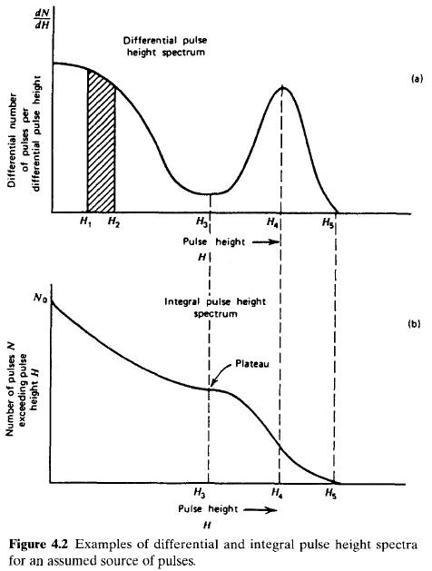 \[ {\rm number \, of \, pulses \, with \, amplitude \, between \, } H_1 {\rm \, and \, } H_2 = \int_0^\infty \frac{dN}{dH}dH \tag{4.10} \] The total number of pulses \(N_0\) represented by the distribution can be obtained by integrating the area under the entire spectrum: \[ N_0 = \int_0^\infty\frac{dN}{dH}dH \tag{4.11} \]Most users of radiation instrumentation are accustomed to looking at the shape of the differential pulse height distribution to display significant features about the source of the pulses. The maximum pulse height observed (\(H_5\)) is simply the point along the abscissa at which the distribution goes to zero. Peaks in the distribution, such as at \(H_4\), indicate pulse amplitudes about which a large number of pulses may be found. On the other hand, valleys or low points in the spectrum, such as at pulse height \(H_3\), indicate values of the pulse amplitude around which relatively few pulses occur. The physical interpretation of differential pulse height spectra always involves areas under the spectrum between two given limits of pulse height. The value of the ordinate itself (\(dN/dH\)) has no physical significance until multiplied by an increment of the abscissa \(H\).
A less common way of displaying the same information about the distribution of pulse amplitudes is through the integral pulse height distribution. Figure 4.2b shows the integral distribution for the same pulse source displayed as a differential spectrum in Fig. 4.2a. The abscissa in the integral case is the same pulse height scale shown for the differential distribution.The ordinate now represents the number of pulses whose amplitude exceeds that of a given value of the abscissa \(H\). The ordinate \(N\) must always be a monotonically decreasing function of \(H\) because fewer and fewer pulses will lie above an amplitude \(H\) that is allowed to increase from zero. Because all pulses have some finite amplitude, the value of the integral spectrum at \(H = 0\) must be the total number of pulses observed (\(N_0\)). The value of the integral distribution must decrease to zero at the maximum observed pulse height (\(H_5\)).
The differential and integral distributions convey exactly the same information and one can be derived from the other. The amplitude of the differential distribution at any pulse height His given by the absolute value of the slope of the integral distribution at the same value. Where peaks appear in the differential distribution, such as \(H_4\), local maxima will occur in the magnitude of the slope of the integral distribution. On the other hand, where minima appear in the differential spectrum, such as H3, regions of minimum magnitude of the slope are observed in the integral distribution. Because it is easier to display subtle differences by using the differential distribution, it has become the predominant means of displaying pulse height distribution information.
In setting up a pulse counting measurement, it is often desirable to establish an operating point that will provide maximum stability over long periods of time. For example, small drifts in the value of \(H_d\) could be expected in any real application, and one would like to establish conditions under which these drifts would have minimal influence on the measured counts. One such stable operating point can be achieved at a discrimination point set at the level \(H_3\) in Fig. 4.2. Because the slope of the integral distribution is a minimum at that point, small changes in the discrimination level will have minimum impact on the total number of pulses recorded. In general, regions of minimum slope on the integral distribution are called counting plateaus and represent areas of operation in which minimum sensitivity to drifts in discrimination level are achieved. It should be noted that plateaus in the integral spectrum correspond to valleys in the differential distribution.
Plateaus in counting data can also be observed with a different procedure. For a particular radiation detector it is often possible to vary the gain or amplification provided for the charge produced in radiation interactions. This variation could be accomplished by varying the amplification factor of a linear amplifier between the detector and counting circuit, or in many cases more directly by changing the applied voltage to the detector itself.
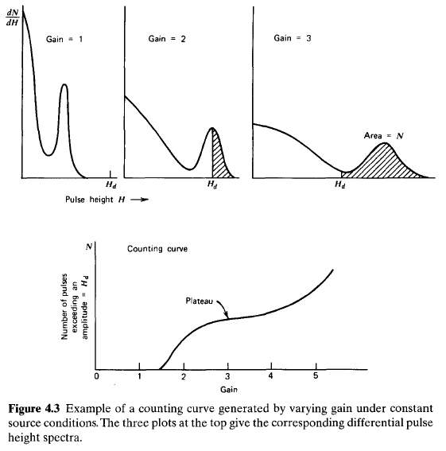
Figure 4.3 shows the differential pulse height distribution corresponding to three different values of voltage gain applied to the same source of pulses. Here the value of gain can be defined as the ratio of the voltage amplitude for a given event in the detector to the same amplitude before some parameter (such as amplification or detector voltage) was changed. The highest voltage gain will result in the largest maximum pulse height, but in all cases the area under the differential distribution will be a constant. In the example shown in Fig. 4.3, no counts will be recorded for a gain \(G = 1\) because under those conditions all pulses will be smaller than \(H_d\). Pulses will begin to be recorded somewhere between a gain \(G = 1\) and \(G = 2\). An experiment can be carried out in which the number of pulses recorded is measured as a function of the gain applied, sometimes called the counting curve. Such a plot is also shown in Fig. 4.3 and in many ways resembles an integral pulse height distribution. We now have a mirror image of the integral distribution, however, because small values of the gain will record no pulses, whereas large values will result in counting nearly all the pulses. Again, plateaus can be anticipated in this counting curve for values of the gain in which the effective discrimination pulse height \(H_d\) passes through minimal in the differential pulse height distribution. In the example shown in Fig. 4.3, the minimum slope in the counting curve should correspond to a gain of about 3, in which case the discrimination point is near the minimum of the valley in the differential pulse height distribution.In some types of radiation detectors, such as Geiger-Mueller tubes or scintillation counters, the gain can conveniently be varied by changing the applied voltage to the detector. Although the gain may not change linearly with voltage, the qualitative features of the counting curve can be traced by a simple measurement of the detector counting rate as a function of voltage. In order to select an operating point of maximum stability, plateaus are again sought in the counting curve that results, and the voltage is often selected to lie at a point of minimum slope on this counting curve. We shall discuss these plateau measurements more specifically in Chapters 6 and 7 in connection with proportional counters and Geiger-Mueller detectors.
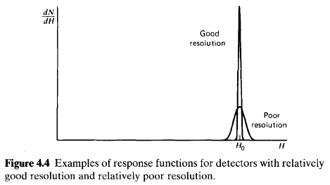
One important property of a detector in radiation spectroscopy can be examined by noting its response to a monoenergetic source of that radiation. Figure 4.4 illustrates the differential pulse height distribution that might be produced by a detector under these conditions. This distribution is called the response function of the detector for the energy used in the determination. The curve labeled "Good resolution" illustrates one possible distribution around an average pulse height \(H_0\). The second curve, labeled "Poor resolution," illustrates the response of a detector with inferior performance. Provided the same number of pulses are recorded in both cases, the areas under each peak are equal. Although both distributions are centered at the same average value \(H_0\), the width of the distribution in the poor resolution case is much greater. This width reflects the fact that a large amount of fluctuation was recorded from pulse to pulse even though the same energy was deposited in the detector for each event. If the amount of these fluctuations is made smaller, the width of the corresponding distribution will also become smaller and the peak will approach a sharp spike or a mathematical delta function. The ability of a given measurement to resolve fine detail in the incident energy of the radiation is obviously improved as the width of the response function (illustrated in Fig. 4.4) becomes smaller and smaller.
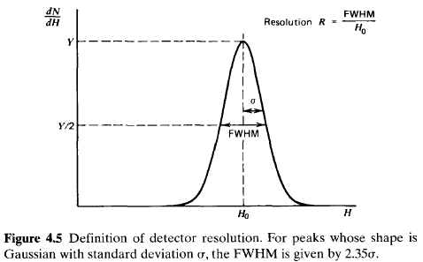
A formal definition of detector energy resolution is shown in Fig. 4.5. The differential pulse height distribution for a hypothetical detector is shown under the same assumption that only radiation for a single energy is being recorded. The full width at half maximum (FWHM) is illustrated in the figure and is defined as the width of the distribution at a level that is just half the maximum ordinate of the peak. This definition assumes that any background or continuum on which the peak may be superimposed is negligible or has been subtracted away. The energy resolution of the detector is conventionally defined as the FWHM divided by the location of the peak centroid \(H_0\). The energy resolution \(R\) is thus a dimensionless fraction conventionally expressed as a percentage. Semiconductor diode detectors used in alpha spectroscopy can have an energy resolution less than 1%, whereas scintillation detectors used in gamma-ray spectroscopy normally show an energy resolution in the range of 5-10%. It should be clear that the smaller the figure for the energy resolution, the better the detector will be able to distinguish between two radiations whose energies lie near each other. An approximate rule of thumb is that one should be able to resolve two energies that are separated by more than one value of the detector FWHM.
There are a number of potential sources of fluctuation in the response of a given detector that result in imperfect energy resolution. These include any drift of the operating characteristics of the detector during the course of the measurements, sources of random noise within the detector and instrumentation system, and statistical noise arising from the discrete nature of the measured signal itself. The third source is in some sense the most important because it represents an irreducible minimum amount of fluctuation that will always be present in the detector signal no matter how perfect the remainder of the system is made. In a wide category of detector applications, the statistical noise represents the dominant source of fluctuation in the signal and thus sets an important limit on detector performance.
The statistical noise arises from the fact that the charge \(Q\) generated within the detector by a quantum of radiation is not a continuous variable but instead represents a discrete number of charge carriers. For example, in an ion chamber the charge carriers are the ion pairs produced by the passage of the charged particle through the chamber, whereas in a scintillation counter they are the number of electrons collected from the photocathode of the photomultiplier tube. In all cases the number of carriers is discrete and subject to random fluctuation from event to event even though exactly the same amount of energy is deposited in the detector.
An estimate can be made of the amount of inherent fluctuation by assuming that the formation of each charge carrier is a Poisson process. Under this assumption, if a total number \(N\) of charge carriers is generated on the average, one would expect a standard deviation of \(\sqrt{N}\) to characterize the inherent statistical fluctuations in that number [see Eq. (3.29)]. If this were the only source of fluctuation in the signal, the response function, as shown in Fig. 4.5, should have a Gaussian shape, because \(N\) is typically a large number. In this case, the Gaussian function introduced in the previous chapter is most conveniently written \[ G(H) = \frac{A}{\sigma\sqrt{2\pi}}\exp\left(-\frac{(H-H_0)^2}{2\sigma^2}\right) \tag{4.12} \] The width parameter a determines the FWHM of any Gaussian through the relation \(FWHM = 2.35\sigma\). (The remaining two parameters, \(H_0\) and \(A\), represent the centroid and area, respectively.)
The response of many detectors is approximately linear, so that the average pulse amplitude \(H_0 = KN\), where \(K\) is a proportionality constant.The standard deviation a of the peak in the pulse height spectrum is then \(\sigma = K\sqrt{N}\) and its FWHM is \(2.35K\sqrt{N}\). We then would calculate a limiting resolution \(R\) due only to statistical fluctuations in the number of charge carriers as \[ R\left|_{\rm Poisson \, limit} \equiv \frac{FWHM}{H_0} = \frac{2.35K\sqrt{N}}{KN} = \frac{2.35}{\sqrt{N}}\right. \tag{4.13} \]
Note that this limiting value of \(R\) depends only on the number of charge carriers \(N\), and the resolution improves (\(R\) will decrease) as \(N\) is increased. From Eq. (4.13) we see that in order to achieve an energy resolution better than 1%, one must have \(N\) greater than 55,000. An ideal detector would have as many charge carriers generated per event as possible, so that this limiting resolution would be as small a percentage as possible. The great popularity of semiconductor detectors stems from the fact that a very large number of charge carriers are generated in these devices per unit energy lost by the incident radiation.
Careful measurements of the energy resolution of some types of radiation detectors have shown that the achievable values for \(R\) can be lower by a factor as large as 3 or 4 than the minimum predicted by the statistical arguments given above. These results would indicate that the processes that give rise to the formation of each individual charge carrier are not independent, and therefore the total number of charge carriers cannot be described by simple Poisson statistics.The Fano factor has been introduced in an attempt to quantify the departure of the observed statistical fluctuations in the number of charge carriers from pure Poisson statistics and is defined as \[ F \equiv \frac{{\rm observed \, variance \, in \,} N}{{\rm Poisson \, predicted \, variance \,} (= N)} \tag{4.13} \] Because the variance is given by \(\sigma^2\), the equivalent expression to Eq. (4.13) is now \[ R\left|_{\rm Statistical \, limit} = \frac{2.35K\sqrt{N}\sqrt{F}}{KN} = 2.35\sqrt{\frac{F}{N}}\right. \tag{4.14} \] Although the Fano factor is substantially less than unity for semiconductor diode detectors and proportional counters, other types such as scintillation detectors appear to show a limiting resolution consistent with Poisson statistics and the Fano factor would, in these cases, be unity.
Any other source of fluctuations in the signal chain will combine with the inherent statistical fluctuations from the detector to give the overall energy resolution of the measuring system. It is sometimes possible to measure the contribution to the overall FWHM due to a single component alone. For example, if the detector is replaced by a stable pulse generator, the measured response of the remainder of the system will show a fluctuation due primarily to electronic noise. If there are several sources of fluctuation present and each is symmetric and independent, statistical theory predicts that the overall response function will always tend toward a Gaussian shape, even if the individual sources are characterized by distributions of different shape. As a result, the Gaussian function given in Eq. (4.12) is widely used to represent the response function of detector systems in which many different factors may contribute to the overall energy resolution. Then the total FWHM will be the quadrature sum of the FWHM values for each individual source of fluctuation: \[ (FWHM)_{\rm overall}^2 = (FWHM)_{\rm statistical}^2 = (FWHM)_{\rm noise}^2 + (FWHM)_{\rm drift}^2 + ... \] Each term on the right is the square of the FWHM that would be observed if all other sources of fluctuation were zero.
On the other hand, uncharged radiations such as gamma rays or neutrons must first undergo a significant interaction in the detector before detection is possible. Because these radiations can travel large distances between interactions, detectors are often less than 100% efficient. It then becomes necessary to have a precise figure for the detector efficiency in order to relate the number of pulses counted to the number of neutrons or photons incident on the detector.
It is convenient to subdivide counting efficiencies into two classes: absolute and intrinsic. Absolute efficiencies are defined as \[ \epsilon_{\rm abs} = \frac {\rm number \, of \, pulses \, recorded} {\rm number \, of \, radiation \, quanta \, emitted \, by \, source} \tag{4.16} \] and are dependent not only on detector properties but also on the details of the counting geometry (primarily the distance from the source to the detector). The intrinsic efficiency is defined as \[ \epsilon_{\rm int} = \frac {\rm number \, of \, pulses \, recorded} {\rm number \, of \, radiation \, quanta \, incident \, on \, detector} \tag{4.17} \] and no longer includes the solid angle subtended by the detector as an implicit factor. The two efficiencies are simply related for isotropic sources by \(\epsilon_{\rm int} = \epsilon_{\rm abs} \cdot (4\pi/\Omega)\), where \(\Omega\) is the solid angle of the detector seen from the actual source position. It is much more convenient to tabulate values of intrinsic rather than absolute efficiencies because the geometric dependence is much milder for the former. The intrinsic efficiency of a detector usually depends primarily on the detector material, the radiation energy, and the physical thickness of the detector in the direction of the incident radiation. A slight dependence on distance between the source and the detector does remain, however, because the average path length of the radiation through the detector will change somewhat with this spacing.
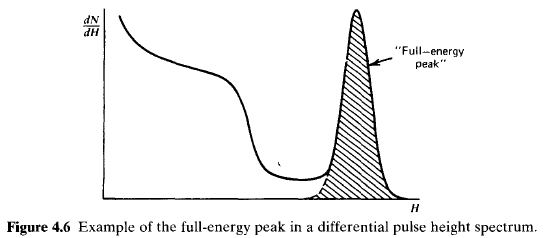
Counting efficiencies are also categorized by the nature of the event recorded. If we accept all pulses from the detector, then it is appropriate to use total efficiencies. In this case all interactions, no matter how low in energy, are assumed to be counted. In terms of a hypothetical differential pulse height distribution shown in Fig. 4.6, the entire area under the spectrum is a measure of the number of all pulses that are recorded, regardless of amplitude, and would be counted in defining the total efficiency. In practice, any measurement system always imposes a requirement that pulses be larger than some finite threshold level set to discriminate against very small pulses from electronic noise sources. Thus, one can only approach the theoretical total efficiency by setting this threshold level as low as possible. The peak efficiency, however, assumes that only those interactions that deposit the full energy of the incident radiation are counted. In a differential pulse height distribution, these full energy events are normally evidenced by a peak that appears at the highest end of the spectrum. Events that deposit only part of the incident radiation energy then will appear farther to the left in the spectrum. The number of full energy events can be obtained by simply integrating the total area under the peak, which is shown as the cross-hatched area in Fig. 4.6. The total and peak efficiencies are related by the peak-to-total ratio \(r\) \[ r = \frac{\epsilon_{\rm peak}}{\epsilon_{\rm total}} \tag{4.18} \] which is sometimes tabulated separately. It is often preferable from an experimental standpoint to use only peak efficiencies, because the number of full energy events,is not sensitive to some perturbing effects such as scattering from surrounding objects or spurious noise. Therefore, values for the peak efficiency can be compiled and universally applied to a wide variety of laboratory conditions, whereas total efficiency values may be influenced by variable conditions.
To be complete, a detector efficiency should be specified according to both of the above criteria. For example, the most common type of efficiency tabulated for gamma-ray detectors is the intrinsic peak efficiency.
A detector with known efficiency can be used to measure the absolute activity of a radioactive source. In the following discussion, we assume that a detector with an intrinsic peak efficiency \(\epsilon_{\rm ip}\) has been used to record \(N\) events under the full energy peak in the detector spectrum. For simplicity, we also assume that the source emits radiation isotropically and that no attenuation takes place between the source and detector. From the definition of intrinsic peak efficiency, the number of radiation quanta \(S\) emitted by the source over the measurement period is then given by \[ S = N\frac{4\pi}{\epsilon_{\rm ip}\Omega} \tag{4.19} \] where \(\Omega\) represent the solid angle (in steradians) subtended by the detector at the source position. The solid angle is defined by an integral over the detector surface that faces the source, of the form \[ \Omega = \int_A \frac{\cos\alpha}{r^2}dA \tag{4.20} \] where \(r\) represents the distance between the source and a surface element \(dA\), and \(\alpha\) is the angle between the normal to the surface element and the source direction. If the volume of the source is not negligible, then a second integration must be carried out over all volume elements of the source. For the common case of a point source located along the axis of a right circular cylindrical detector, \(\Omega\) is given by \[ \Omega = 2\pi\left(1 - \frac{d}{\sqrt{d^2 + a^2}}\right) \tag{4.21} \] where the source-detector distance d and detector radius a are shown in the sketch below:
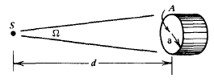
For \(d \gg a\), the solid angle reduces to the ratio of the detector plane frontal area \(A\) visible at the source to the square of the distance: \[ \Omega \cong \frac{A}{d^2} = \frac{\pi a^2}{d^2} \tag{4.22} \] Another commonly encountered circumstance, shown in the sketch below, involves a uniform circular disk source emitting isotropic radiation aligned with a circular disk detector, both positioned perpendicular to a common axis passing through their centers: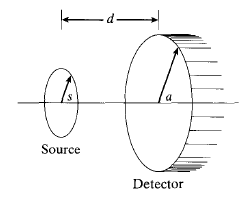
In terms of the dimensions shown on the sketch, it can be shown that the effective solid angle averaged over the surface of the source is given by solving the integral \[ \Omega = \frac{4\pi a}{s}\int_{0}^\infty \frac{\exp(-dk)J_1(sk)J_2(ak)}{k}dk \] where the \(J_1(x)\) are Bessel functions of \(x\). This integral does not have an analytic solution, so it can only be solved using numerical techniques. A useful approximate solution is \begin{eqnarray} \Omega &\cong& 2\pi\left[ 1 - \frac{1}{(1 + \beta)^{1/2}} - \frac{3}{8}\frac{\alpha\beta}{(1 + \beta)^{5/2}} + \alpha^2[F1] + \alpha^3[F2] \right] \\ F1 &=& \frac{5}{16}\frac{\beta}{(1 + \beta)^{7/2}} - \frac{35}{16}\frac{\beta^2}{(1 + \beta)^{9/2}} \\ F2 &=& \frac{35}{128}\frac{\beta}{(1 + \beta)^{9/2}} - \frac{315}{256}\frac{\beta^2}{(1 + \beta)^{11/2}} - \frac{1155}{1024}\frac{\beta^3}{(1 + \beta)^{13/2}} \end{eqnarray} where \[ \alpha \equiv \left(\frac{a}{d}\right)^2 \qquad \beta \equiv \left(\frac{s}{d}\right)^2 \] This approximation becomes inaccurate when the source or detector diameters become too large compared with their spacing, but it has been shown to give very accurate results over a wide range of dimensions.Published values for \(\Omega\) can sometimes be found for more complicated geometric arrangements involving off-axis or volumetric sources, or detectors with more complex shapes. Some specific examples of data or descriptions of algorithms useful in solid angle computations are given in Refs. 6-15.
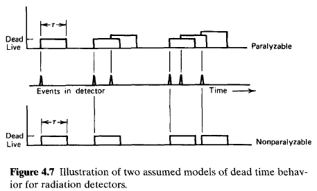
Two models of dead time behavior of counting systems have come into common usage: paralyzable and nonparalyzable response. These models represent idealized behavior, one or the other of which often adequately resembles the response of a real counting system. The fundamental assumptions of the models are illustrated in Fig. 4.7. At the center of the figure, a time scale is shown on which six randomly spaced events in the detector are indicated. At the bottom of the figure is the corresponding dead time behavior of a detector assumed to be nonparalyzable. A fixed time \(\tau\) is assumed to follow each true event that occurs during the "live period" of the detector.True events that occur during the dead period are lost and assumed to have no effect whatsoever on the behavior of the detector. In the example shown, the nonparalyzable detector would record four counts from the six true interactions. In contrast, the behavior of a paralyzable detector is shown along the top line of Fig. 4.7. The same dead time \(\tau\) is assumed to follow each true interaction that occurs during the live period of the detector. True events that occur during the dead period, however, although still not recorded as counts, are assumed to extend the dead time by another period \(\tau\) following the lost event. In the example shown, only three counts are recorded for the six true events.The two models predict the same first-order losses and differ only when true event rates are high. They are in some sense two extremes of idealized system behavior, and real counting systems will often display a behavior that is intermediate between these extremes. The detailed behavior of a specific counting system may depend on the physical processes taking place in the detector itself or on delays introduced by the pulse processing and recording electronics.
In the discussion that follows, we examine the response of a detector system to a steady-state source of radiation, and we adopt the following definitions: \begin{eqnarray} n &=& {\rm true \, interaction \, rate} \\ m &=& {\rm recorded \, count \, rate} \\ \tau &=& {\rm system \, dead \, time} \end{eqnarray} We assume that the counting time is long so that both \(n\) and \(m\) may be regarded as average rates. In general, we would like to obtain an expression for the true interaction rate \(n\) as a function of the measured rate \(m\) and the system dead time \(\tau\), so that appropriate corrections can be made to measured data to account for the dead time losses.
In the nonparalyzable case, the fraction of all time that the detector is dead is given simply by the product \(m\tau\). Therefore, the rate at which true events are lost is simply \(nm\tau\). But because \(n - m\) is another expression for the rate of losses, \[ n - m = nm\tau \tag{4.23} \] Solving for \(n\), we obtain \[ n = \frac{m}{1 - m\tau} \qquad {\rm :Nonparalyzable \, model} \tag{4.24} \]
In the paralyzable case, dead periods are not always of fixed length, so we cannot apply the same argument. Instead, we note that rate m is identical to the rate of occurrences of time intervals between true events which exceed \(\tau\). The distribution of intervals between random events occurring at an average rate n was previously shown [Eq. (3.71)] to be \[ P_1(T)dT = ne^{-nT}dT \tag{4.25} \] where \(P_1(T)dT\) is the probability of observing an interval whose length lies within \(dT\) about \(T\): The probability of intervals larger than \(\tau\) can be obtained by integrating this distribution between \(\tau\) and \(\infty\) \[ P_2(\tau) = \int_0^\infty P_1(T)dt = e^{-n\tau} \tag{4.26} \] The rate of occurrence of such intervals is then obtained by simply multiplying the above expression by the true rate \(n\) \[ m = ne^{-n\tau} \qquad {\rm :Paralyzable \, model} \tag{4.27} \] The paralyzable model leads to a more cumbersome result because we cannot solve explicitly for the true rate \(n\). Instead, Eq. (4.27) must be solved iteratively if \(n\) is to be calculated from measurements of \(m\) and knowledge of \(\tau\).
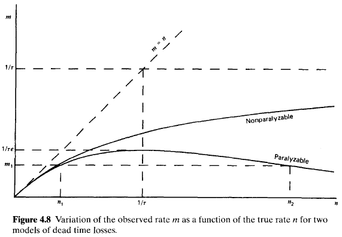
A plot of the observed rate \(m\) versus the true rate \(n\) is given in Fig. 4.8 for both models. When the rates are low the two models give virtually the same result, but the behavior at high rates is markedly different. A nonparalyzable system will approach an asymptotic value for the observed rate of \(1/\tau\), which represents the situation in which the counter barely has time to finish one dead period before starting another. For paralyzable behavior, the observed rate is seen to go through a maximum. Very high true interaction rates result in a multiple extension of the dead period following an initial recorded count, and very few true events can be recorded. One must always be careful when using a counting system that may be paralyzable to ensure that ostensibly low observed rates actually correspond to low interaction rates rather than very high rates on the opposite side of the maximum. Mistakes in the interpretation of nuclear counting data from paralyzable systems have occurred in the past by overlooking the fact that there are always two possible true interaction rates corresponding to a given observed rate. As shown in Fig. 4.8, the observed rate \(m_1\) can correspond to either true rates \(n_1\) or \(n_2\). The ambiguity can be resolved only by changing the true rate in a known direction while observing whether the observed rate increases or decreases.
For low rates (\(n \ll 1/\tau\)) the following approximations can be written : \[ Nonparalyzable \qquad m = \frac{n}{1 + n\tau} \cong n(1 - n\tau) \tag{4.28} \] \[ Paralyzable \qquad m = ne^{-n\tau} \cong n(1 - n\tau) \tag{4.29} \] Thus, the two models lead to identical results in the limit of small dead time losses.
If possible, one should avoid measurement conditions under which dead time losses are high because of the errors that inevitably occur in making corrections for the losses. The value of \(\tau\) may be uncertain or subject to variation, and the system behavior may not follow exactly either of the models described above. When losses are greater than 30 or 40%. the calculated true rate becomes very sensitive to small changes in the measured rate and the assumed system behavior. Instead, the user should seek to reduce the losses by changing the conditions of the measurement or by choosing a counting system with smaller dead time.
The common example is the two-source method. The method is based on observing the counting rate from two sources individually and in combination. Because the counting losses are nonlinear, the observed rate due to the combined sources will be less than the sum of the rates due to the two sources counted individually, and the dead time can be calculated from the discrepancy.
To illustrate the method, let \(n_1\), \(n_2\), and \(n_12\) be the true counting rates (sample plus background) with source 1, source 2, and the combined sources, respectively, in place. Let \(m_1\), \(m_2\), and \(m_{12}\) represent the corresponding observed rates. Also, let \(n_b\) and \(m_b\) be the true and measured background rates with both sources removed. Then \begin{eqnarray} n_{12} - n_b &=& (n_1 - n_b) + (n_2 - n_b) \\ n_{12} + n_b &=& n_1 + n_2 \tag{4.30} \end{eqnarray} Now assuming the nonparalyzable model [Eq. (4.24)] and substituting, we obtain \[ \frac{m_{12}}{1 - m_{12}\tau} + \frac{m_b}{1 - m_b\tau} = \frac{m_1}{1 - m_1\tau} + \frac{m_2}{1 - m_2\tau} \tag{4.31} \] Solving this equation explicitly for \(\tau\) gives the following result: \[ \tau = \frac{X(1 - \sqrt{1 - Z})}{Y} \tag{4.32} \] where \begin{eqnarray} X &\equiv& m_1 m_2 -m_b m_{12} \\ Y &\equiv& m_1 m_2 (m_{12} + m_b) - m_b m_{12} (m_1 + m_2) \\ Z &\equiv& \frac{Y(m_1 + m_2 -m_{12} -m_b)}{X^2} \end{eqnarray}
A number of approximations to this general solution are often recommended in textbooks. For example, in the case of zero background (\(m_b = 0\)) \[ \tau = \frac{m_1 m_2 - [m_1 m_2(m_{12} - m_1)(m_{12} - m_2)]^{1/2}}{m_1 m_2 m_{12}} \tag{4.33} \] Other simplifications of Eq. (4.32) have appeared that are based on various mathematical approximations. However, the use of any type of approximation should be discouraged because significant errors can be introduced under typical experimental conditions. Because the two-source method involves a substantial amount of experimental time and effort, it is difficult to justify the use of any expression other than Eq. (4.32) in analyzing the results.
Because the method is essentially based on observing the difference between two nearly equal large numbers, careful measurements are required in order to get reliable values for the dead time. The measurement is usually carried out by counting source 1, placing source 2 nearby and measuring the combined rate, and then removing source 1 to measure the rate caused by source 2 alone. During this operation, care must be exercised not to move the source already in place, and consideration must be given to the possibility that the presence of a second source will scatter radiation into the detector that would not ordinarily be counted from the first source alone. In order to keep the scattering unchanged, a dummy second source without activity is normally put in place when the sources are counted individually. Best results are obtained by using sources active enough to result in a fractional dead time \(m_{12}\tau\) of at least 20%.
A second method can be carried out if a short-lived radioisotope source is available. In this case the departure of the observed counting rate from the known exponential decay of the source can be used to calculate the dead time. The technique, known as the decaying source method, is based on the known behavior of the true rate \(n\): \[ n = n_0 e^{-\lambda t} + n_b \tag{4.34} \] where \(n_0\) is the true rate at the beginning of the measurement and \(\lambda\) is the decay constant of the particular isotope used for the measurement.
In the limit of negligible background, a simple graphical procedure can be applied to analyze the resulting data. Then Eq. (4.34) becomes \[ n \cong n_0 e^{-\lambda t} \tag{4.35} \] By inserting Eq. (4.35) into Eq. (4.24) and carrying out some algebra, we get the following relation for the nonparalyzable model: \[ me^{-\lambda t} = -n_0 \tau m + n_0 \tag{4.36} \] If we identify, as in Fig. 4.9a, the abscissa as \(m\) and the ordinate as the product \(me^{-\lambda t}\), then Eq. (4.36) is that of a straight line. The experimental procedure consists of measuring the observed rate \(m\) as a function of time \(t\), and thus defining points that should lie on this line starting from the right and moving left as the source decays. By fitting the best straight line to the data, the intercept will give \(n_0\), the true rate at the beginning of the measurement, and the negative slope will give the product of \(n_0 \tau\). The dead time \(\tau\) then follows directly from the ratio of the slope to the intercept.
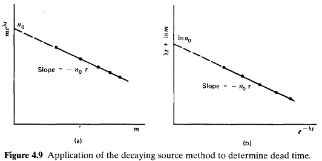
For the paralyzable model, inserting Eq. (4.35) into Eq. (4.27) gives the following result: \[ \lambda t + \ln m = -n_0 \tau e^{-\lambda t} + \ln n_0 \tag{4.37} \] Again by choosing the abscissa and ordinate as shown in Fig. 4.9b, the equation of a straight line results. In this case the intercept gives the value \(\ln n_0\), whereas the slope again gives the negative of the product \(n_0\tau\). The dead time can simply be derived from these two values. The decaying source method offers the advantage of not only being able to measure the value of the dead time but also being able to test the validity of the assumed models. If a nonparalyzable model best describes the counting system, the data will most closely fit a straight line for the format shown in Fig. 4.9a. On the other hand, if a paralyzable model is more appropriate, the format shown in Fig. 4.9b will result in a more nearly linear plot of the data. In order to be effective, the measurements should be carried out for a time period at least equal to the half-life of the decaying radioisotope, and the initial loss fraction \(m\tau\) should be at least 20%.
If the background is more than a few percent of the smallest measured rate, the graphical procedure can lead to significant errors. Although some improvement will result from subtracting the observed background rate from all the measured m values, this correction is not rigorous and an exact analysis can only be made by reverting back to Eq. (4.34). It then becomes necessary to use numerical computation techniques to derive values for \(n_0\) and \(\tau\) which, when inserted in an assumed model of the dead time behavior, result in a best fit to the measured data.
The methods described above are applicable to determine the dead time of simple counting systems in which all pulses above a threshold amplitude are recorded. For spectroscopic systems in which the pulse height spectrum is recorded from the detector, other methods are available to deal with counting losses that are based on the mixture of artificial pulses from a pulse generator into the signal processing chain. These pulser-based techniques are treated later in Chapter 17.
If the dead time losses are not small, the deviations from Poisson statistics become more significant. The discarding of events that occur after short time intervals causes the sequence of recorded counts to become somewhat more regular, and the variance expected in repeated measurements is reduced. Detailed analyses of the statistics of counts distorted by dead time are beyond the present scope, but can be found in Refs. 18-21.
With either paralyzable or nonparalyzable behavior, there is some chance that more than one true event is lost per dead period. A recorded count therefore can correspond to the occurrence of any number of true events, from one to many. The relative probability that multiple true events are contained in a typical dead period will increase as the true event rate becomes higher. Because the true events still obey Poisson statistics, relatively simple analyses can be made to predict the probability that a typical recorded count results from the combination of exactly \(x\) true events. These analyses are given later in this text, beginning on p. 636 in connection with the closely related topic of pulse pile-up.
We confine our analysis to a radiation source that can be represented by the timedependent intensity sketched below:
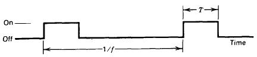
It is assumed that the radiation intensity is constant throughout the duration \(T\) of each pulse, and that the pulses occur at a constant frequency \(f\) Depending on the relative value of the detector dead time \(\tau\), several conditions may apply:For the analysis that follows, it is no longer necessary that the radiation be constant over the pulse length \(T\), but it is required that each radiation pulse be of the same intensity. We carry through the following definitions: \begin{eqnarray} \tau &=& {\rm dead \, time \, of \, the \, detector \, system} \\ m &=& {\rm observed \, counting \, rate} \\ n &=& {\rm true \, counting \, rate \, (if \,} \tau {\rm \, were \, s0)} \\ T &=& {\rm source \, pulse \, length} \\ f &=& {\rm source \, pulse \, frequency} \end{eqnarray}
Since there can be at most a single count per pulse, the probability of an observed count per source pulse is given by \(m/f\).
The average number of true events per source pulse is by definition equal to \(n/f\). (Note that this average can be greater than 1.) We can apply the Poisson distribution [Eq. (3.24)] to predict the probability that at least one true event occurs per source pulse: \begin{eqnarray} P(>0) &=& 1 - P(0) \\ &=& 1 - e^{-\overline{x}} \\ &=& 1 - e^{-n/f} \tag{4.38} \end{eqnarray} Since the detector is "live" at the start of each pulse, a count will be recorded if at least one true event occurs during the pulse. Only one such count can be recorded, so the above expression is also the probability of recording a count per source pulse. Equating the two expressions for this probability, we obtain \[ \frac{m}{f} = 1 - e^{-n/f} \] or \[ m = f(1 - e^{-n/f}) \tag{4.39} \] A plot of this behavior is shown below:
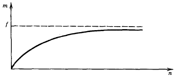
Under these conditions, the maximum observable counting rate is just the pulse repetition frequency, since no more than a single count can be recorded per pulse. Also, neither the specific length of the dead time nor the detailed dead time behavior of the system (whether it is paralyzable or nonparalyzable) has any influence on the losses.
Under normal circumstances, we are more interested in a correction formula to predict the true rate from the measured rate and the system dead time. Solving Eq. (4.39) for \(n\), we derive \[ n = f\ln\left(\frac{f}{f - m}\right) \tag{4.40} \] Recall that this correction is valid only under the conditions \(T < \tau < ( 1/f - T)\).
In this case, the dead time losses are small under the condition \(m \ll f\). Expanding the logarithmic term above for this limit, we find that a first-order correction is then given by \[ n \cong \frac{m}{1 - m/2f} \tag{4.41} \] This result, because of its similarity to Eq. (4.24), can be viewed as predicting an effective dead time value of \(1/2f\) in this low-loss limit. Since this value is now one-half the source pulsing period, it can be many times larger than the actual physical dead time of the detector system.